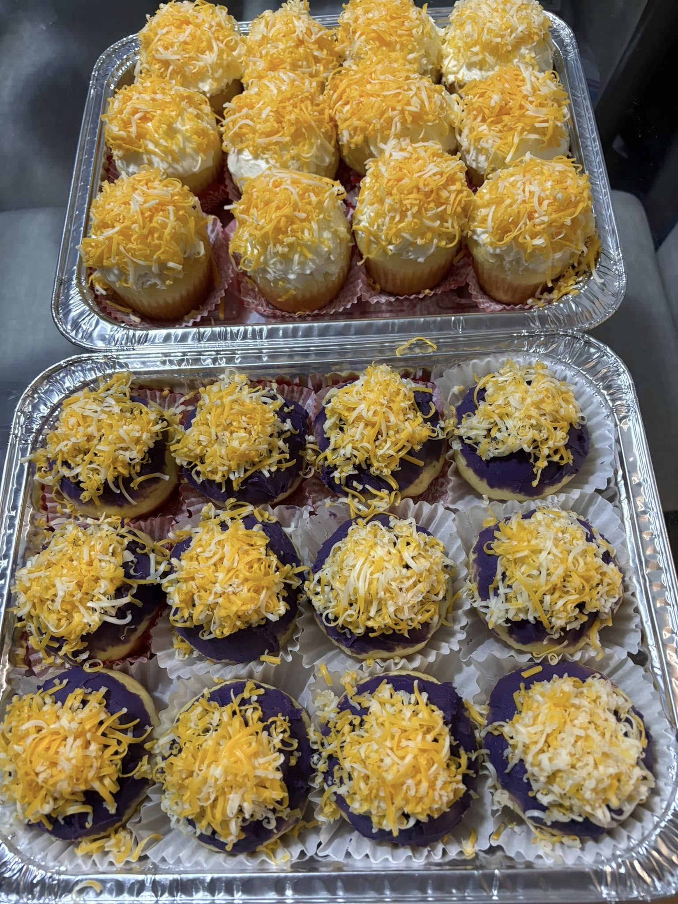

MyRecipe's
"I am the bread of life. Whoever comes to me will never go hungry, and whoever believes in me will never be thirsty" - John 6:35
Artisan Ensaymadas
Chef Joey Prats
Cheese Rolls
Chef Jimbo de Panadero
Bibingka
Inspired burnt Cheesecake

Chef Miko Aspiras
Classic Puto

Chef Chona Garcia-Laureta